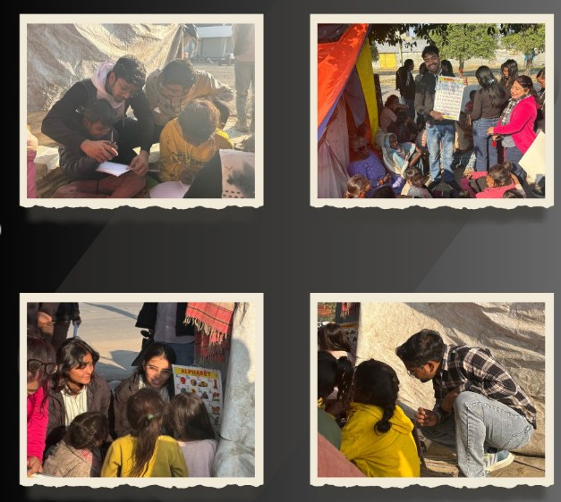
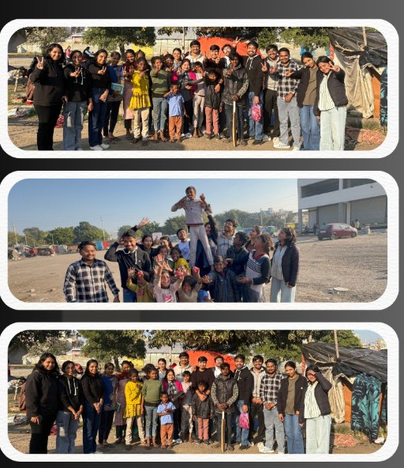
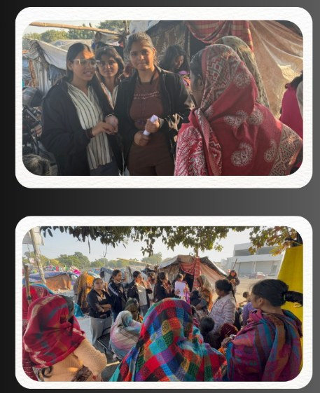
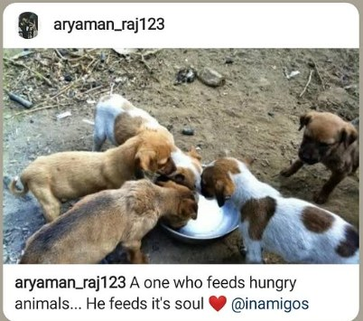
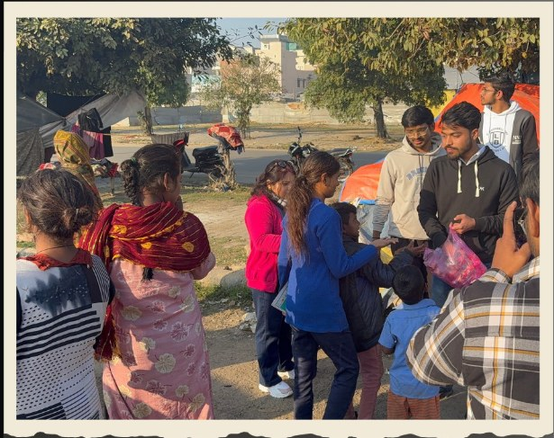
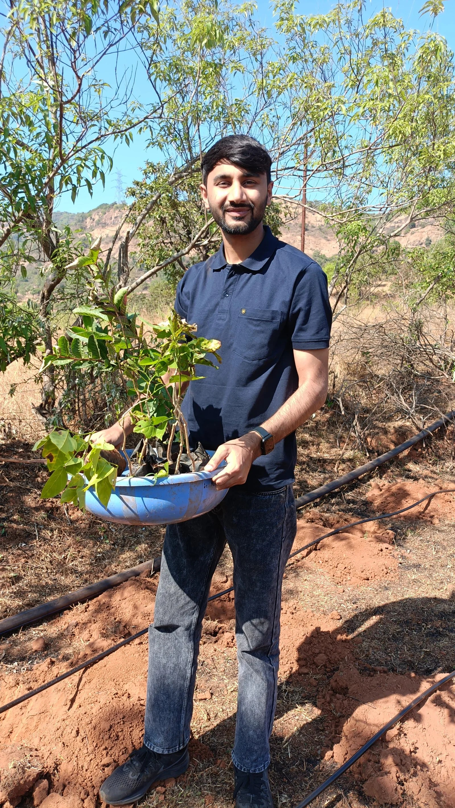
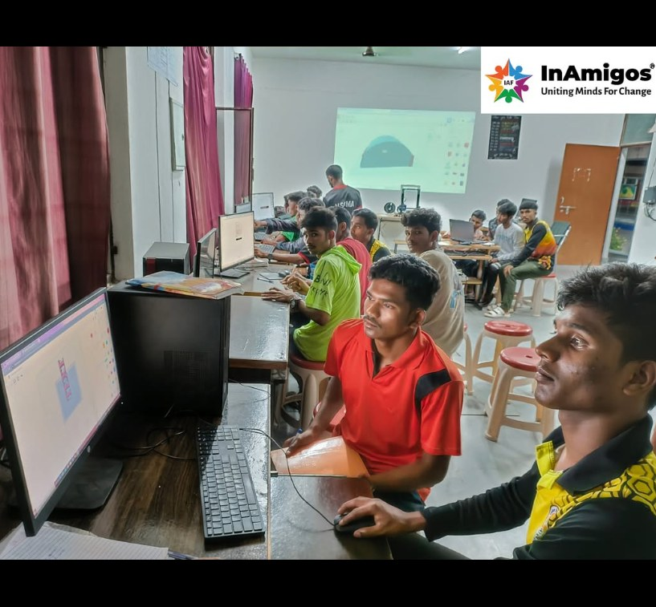

01EDUCATION
Project Bachpanshala
Supporting learning opportunities for underprivileged children through education, digital literacy and life skills.
Explore initiative ↗INAMIGOS FOUNDATION · SECTION 8 NGO
Together, we can create opportunities, empower communities and build a more compassionate tomorrow.

GET TO KNOW US
InAmigos Foundation is a Section 8 non-profit organization founded on 23 September 2020 by Govind Shukla.
Based in Chhattisgarh, the foundation works through volunteers and partners to support communities across areas including education, food and clothing assistance, animal welfare, women's empowerment, environmental conservation and skill development.
Read more about the foundation ↗OUR INITIATIVES
Explore the initiatives through which InAmigos Foundation works towards a more inclusive, caring and sustainable society.

01EDUCATION
Supporting learning opportunities for underprivileged children through education, digital literacy and life skills.
Explore initiative ↗
02WOMEN EMPOWERMENT
Promoting women's confidence and independence through skill development, awareness and livelihood opportunities.
Explore initiative ↗
03ANIMAL WELFARE
Encouraging compassion for animals through feeding, protection, rescue and welfare activities.
Explore initiative ↗
04COMMUNITY SUPPORT
Providing food and clothing support to underprivileged people while promoting dignity and care.
Explore initiative ↗
05ENVIRONMENT
Building environmental awareness and supporting plantation and sustainability efforts.
Explore initiative ↗
06YOUTH & SKILLS
Helping young people build practical skills and improve employability through training and internship opportunities.
Explore initiative ↗OUR REACH
These figures are published on the foundation's official website. Please confirm the reporting period and latest values with the organization before treating them as current.
Visit official website ↗FROM THE FOUNDATION
Examples of events listed on the official website. Check the original event pages for details and updates.
BE PART OF THE CHANGE
Whether you volunteer, share an initiative or connect with the foundation, every positive action can help build stronger communities.